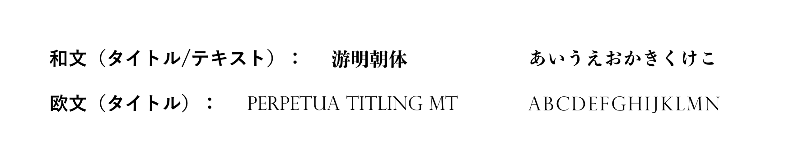

既存のホームページ構成から情報整理を行い、ユーザーの使いやすさや必要情報にたどり着けるまでの分かりやすい導線付けを特に意識し設計しました。
ユーザーがホームページを訪れた際に何を閲覧しているのか、離脱率の高い原因は何か、ブランディングを含め自社の強みや伝えたい事をどこに配置しているのか、などニーズを明確化し構造のリニューアルを行いました。
【 サイトデザイン 】
ブランドカラーを引き立たせ、ペルソナに合わせ落ち着きと重厚感のあるイメージを保ったデザインを軸に制作しました。
ベースはスッキリとしたホワイトとライトグレーでセクションとしての分かりやすさを出しつつ、オレンジのブランドカラーとサイトとしての大人らしさや落ち着きを醸し出すブラックを締め色に起用し提案しました。
また、角を持たせしっかりとさせた印象の中にも、各部分に角丸のアクセントやゆったりとした動きを用いしなやかな印象を残してデザインをしました。
【 配色 】
コーポレートカラーのオレンジをアクセントとして定義し、ユーザーの視覚的印象にカラーとしてもアプローチするためブランドカラーを多めに差し込む提案をしました。
また、ベースのホワイトとライトグレーで清潔感を出しつつブラックを重厚感と引き締めの役割としてご提案しました。
【 フォント 】
ゴシックの中でもほんのり丸みを帯びた可読性の高い「凸版文久見出しゴシック Std」に詳細文章との強弱をつけるためのシンプルな細みゴシック「平成角ゴシック StdN」を選択しました。
